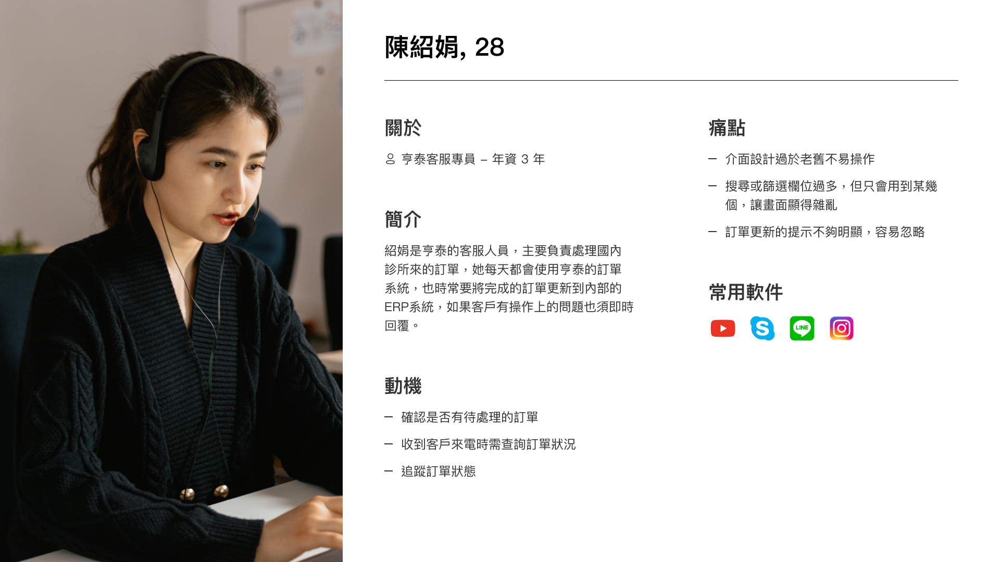
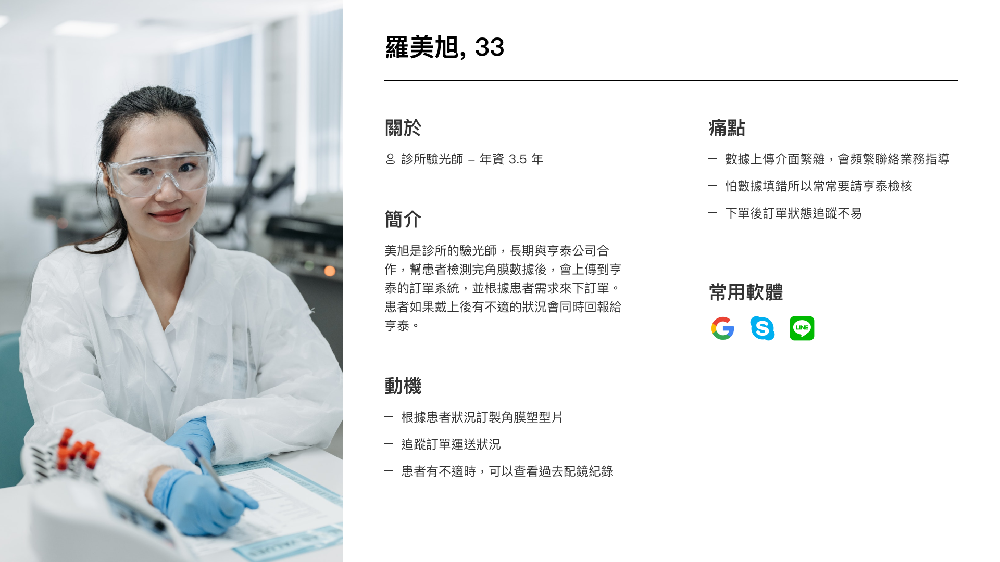
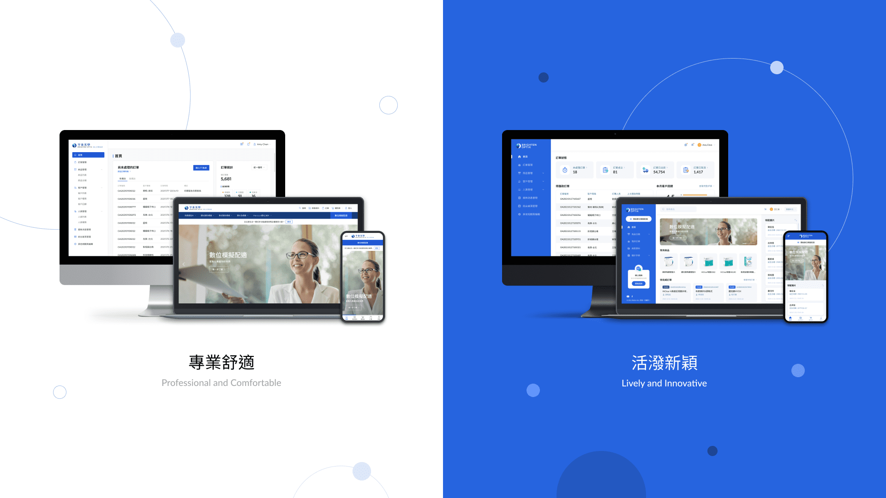
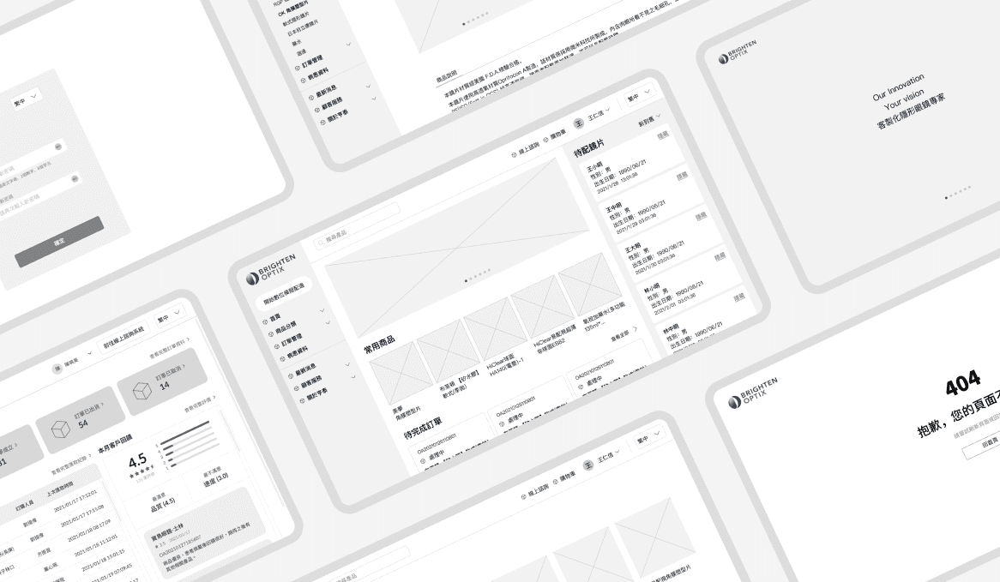
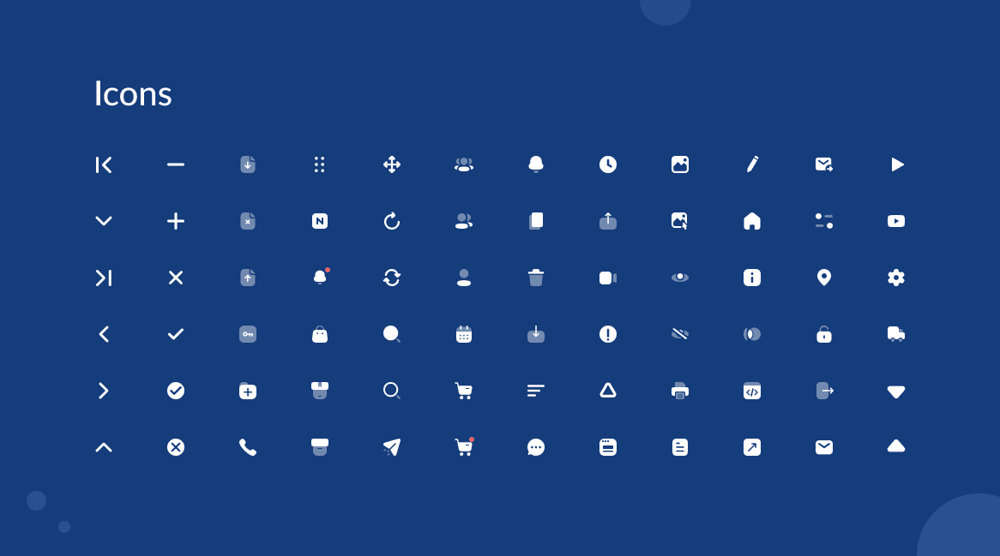

Overview
亨泰光學(BTOX)是垂直整合的 「客製化」眼鏡領導專家，是亞洲第一大隱形眼鏡客製化製造廠 - 亨泰光學，擁有研發、製造、應用三方整合資源。
由於亨泰光學的業務範圍涉及國內及海外市場，過去針對國內及海外個別以兩套訂單系統來管理，而此次專案的目的就是 以亨泰光學內部客服人員的訂單整合需求、以及減少業務與醫生端的溝通成本來設計國內、外皆可共同使用的線上訂單系統。
由於亨泰光學的業務範圍涉及國內及海外市場，過去針對國內及海外個別以兩套訂單系統來管理，而此次專案的目的就是 以亨泰光學內部客服人員的訂單整合需求、以及減少業務與醫生端的溝通成本來設計國內、外皆可共同使用的線上訂單系統。
-
RoleDesignLead / UI Designer
-
Duration11 month
-
Team1 PM, 4 Designers, 1 SA, 5 Developer
Pain Points
由於過去國內及海外一直是分開的兩套系統，商業邏輯也不盡相同，亨泰光學內部也透過個別的部門來負責。而目前訂單後台系統風格過於陽春，資訊呈現上也比較不清楚，所以我們整理了以下幾個痛點：
- 使用兩套系統來管理國內海外市場的訂單，導致內部人員後續統整困難，也需花額外的成本維護
- 舊有的系統風格導致資訊呈現不清楚，操作流程也比較繁瑣，難以找到對應的功能
User Personas
根據與利害關係人進行的需求訪談，我們統整出了主要的兩個使用角色，一個是後台的主要使用者-客服專員，主要處理前台送來的訂單，另一個是前台的使用者-驗光師，負責處理病患檢測角膜數據後，透過前台來下訂單給亨泰。


Our Goal
經由上述需求訪談、痛點分析、與決定使用者角色後，我們意識到國內外整合的重要性，還有整個訂單流程有許多需要優化的部分，所以我們的首要目標為
在整合國內及海外系統邏輯的同時，優化訂單的操作流程，並確保各項功能具備足夠的彈性來滿足各個角色的需求
Style Proposal
釐清目標後，我們提供了兩套視覺風格提案：
首先是「專業舒適」，主要目標為強化品牌形象與曝光度。使用簡約的風格與留白空間來增加瀏覽舒適度，在版型設計上採用直角的元素來營造專業、穩重的視覺體驗。
再來是「活潑新穎」，以功能佈局做為設計的依據，重視功能和空間的組織。在版型設計上採用圓角來使整體視覺更加圓滑，並利用鮮明的配色與圖示來營造活潑、新穎的視覺體驗。
而最後客戶希望以「活潑新穎」的版型為主，但配色上希望採用「專業舒適」較沈穩內斂的藍色。
首先是「專業舒適」，主要目標為強化品牌形象與曝光度。使用簡約的風格與留白空間來增加瀏覽舒適度，在版型設計上採用直角的元素來營造專業、穩重的視覺體驗。
再來是「活潑新穎」，以功能佈局做為設計的依據，重視功能和空間的組織。在版型設計上採用圓角來使整體視覺更加圓滑，並利用鮮明的配色與圖示來營造活潑、新穎的視覺體驗。
而最後客戶希望以「活潑新穎」的版型為主，但配色上希望採用「專業舒適」較沈穩內斂的藍色。

Wireframe
確認風格後，UX Designer會依據Funtional Map與需求訪談的結果來繪製線框圖，並與SA確認系統可行性後規劃UI Flow。在這段過程中我們所有設計師也都會共同參與討論與發想，客戶確認後，再交給我們UI Designer來進行後續設計。

UI Elements
